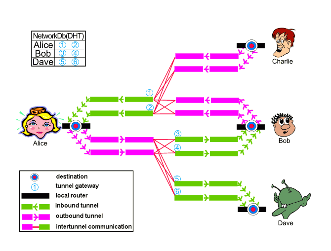
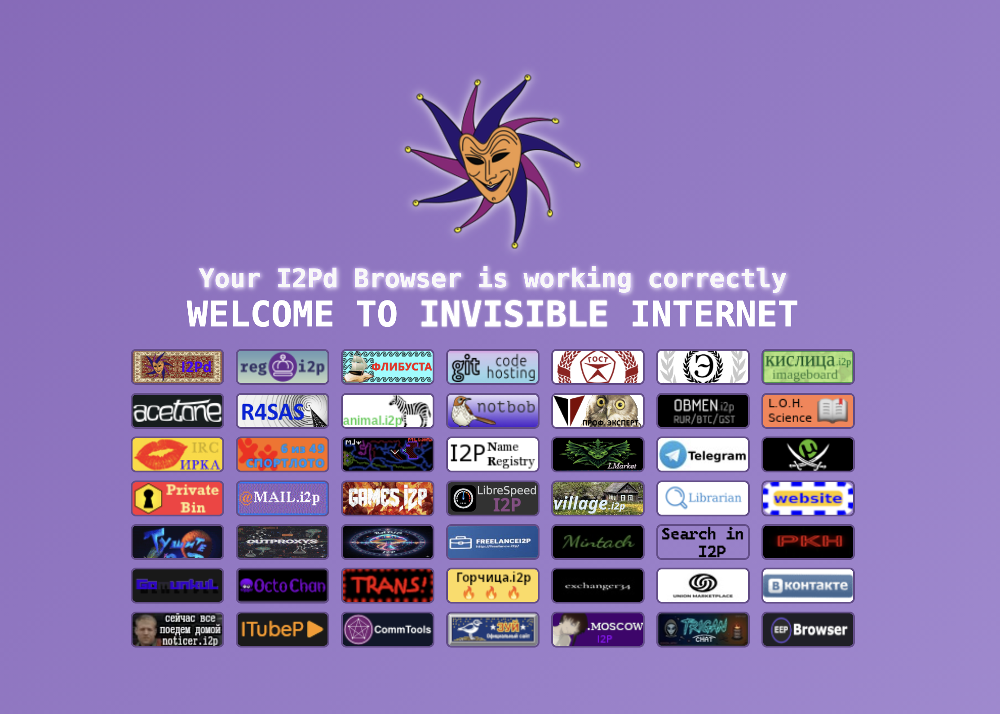
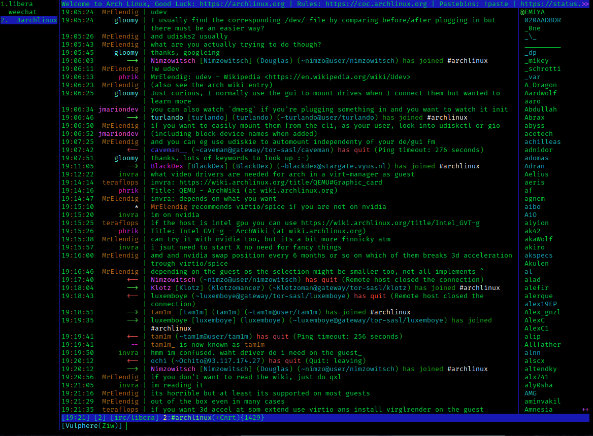

I2P(d) Invisible Internet Project
Overview
I2P is an anonymizing peer-to-peer network — the Invisible Internet Project. It started in 2003 as a fork of Freenet, written in Java, and for its early years was led by a pseudonymous developer known as “jrandom”; others carried the work on after he stepped away. The Wikipedia article has the full history.
At the end of 2013 a second implementation appeared: i2pd, a C++ rewrite created by a developer known as “orignal”, who still leads the project. Same network, same protocol, a much lighter implementation — no JVM, one binary, a small memory footprint, so it runs fine on a Raspberry Pi. The “purple” in the name (Purple I2P) comes from the shirt color on the I2P mascot, to tell it apart from the official Java implementation, where the shirt is red.
orignal explained the reasoning in the Russian article "«Пурпурный» I2P — окно в мир C++ приложений": the official I2P is written in Java, Java is heavy for weak devices, and the strength of cryptography available in Java depends on the country — so a C++ implementation had always been on the agenda.
Both implementations speak the same protocol, so running i2pd still puts you on the same network. The setup below is i2pd.
How it works
I2P is an overlay network: it runs on top of the public internet and relies on its participants to carry each other’s traffic. Your router — i2pd, in our case — maintains connections to a set of peers and builds tunnels through them. A message is encapsulated in several layers of encryption, and every router along the tunnel removes exactly one layer. No single hop can observe both ends of the path, and none of them knows what the payload contains.
What distinguishes I2P from Tor is the traffic packing model. Instead of a circuit per connection, several messages are bundled into a single “garlic”: each message is a clove, and a router cannot tell how many cloves it is carrying. This is what the Russian community calls “чесночное шифрование” — the same principle as onion routing, applied to individual messages.
Several design consequences follow:
- Tunnels are unidirectional: outbound for your own traffic, inbound so others can reach you. Tor builds a single bidirectional circuit.
- The network is self-contained by design. There are no exit nodes to the clearnet by default — outproxies exist, but they are rare and slow — so I2P is designed for services inside the network, not for browsing regular sites.
- Addresses are cryptographic destinations ending in
.i2p, not IPs. Nothing to seize, nothing to block by address. - The routing database (NetDb) is distributed across floodfill routers, so there is no central directory to take down.
- It is message-oriented and carries UDP, which suits P2P applications.
The classic picture from the I2P docs shows it better than words — Alice with two inbound and two outbound tunnels, two hops each:

Tunnels, destinations and the NetDb — image by the I2P team, CC BY-SA 4.0

Tor is the natural comparison, and the difference is mostly about the goal. Tor was built for anonymous access to the open web: onion routing was researched at the U.S. Naval Research Laboratory in the mid-1990s, Tor was released in 2002, and the code was open-sourced in 2004 with EFF support — the project history, Wikipedia and this 2005 Wired piece have the details. The military origin is not a secret; what matters in practice is the model — Tor takes you out to the clearnet through exit nodes, I2P keeps you inside its own network.
Both share the same operational constraint: the router has to stay online and reachable for tunnels to be built, and browsing is noticeably slower than on the clearnet.
Setup
I run i2pd on a Raspberry Pi as the always-on server and use it from a laptop on the same home network. The Pi holds the tunnels and the console; the laptop only needs a browser and a proxy.
Server (Raspberry Pi)
Download the .deb from the releases page — for Debian on arm64 it looks like i2pd_*.0-1bookworm1_arm64.deb — and install it:
sudo dpkg -i i2pd_*_arm64.debPick a random port for the router. Do not keep the default 4567; the developers explicitly ask you to choose your own. The helper from the docs:
>>> import socket
>>> s = socket.socket()
>>> s.bind(('', 0))
>>> print(s.getsockname()[1])Put the port into /etc/i2pd/i2pd.conf:
## Port to listen for connections
## By default i2pd picks a random port and listens on it.
## If you want to change the port, you MUST pick a random number too.
port = 36793
## Enable communication through ipv4 (default: true)
ipv4 = true
## Enable communication through ipv6 (default: false)
ipv6 = false
# my provider doesn't support ipv6 for nowOpen the router port and let the LAN reach the proxies and the console:
sudo ufw allow 36793
sudo ufw allow from <your-lan-subnet> to any port 4444
sudo ufw allow from <your-lan-subnet> to any port 4447
sudo ufw allow from <your-lan-subnet> to any port 7070Forward TCP and UDP 36793 on the router to the Pi. That is the only port reachable from the outside; 4444 (HTTP proxy), 4447 (SOCKS proxy) and 7070 (web console) stay on the LAN.
For the console I prefer an SSH tunnel instead of exposing 7070:
ssh -i ~/.ssh/id_rsa_pi \
-L 7070:127.0.0.1:7070 \
-L 4444:127.0.0.1:4444 \
-L 4447:127.0.0.1:4447 \
<user>@<pi-lan-ip>The console is then at http://127.0.0.1:7070. Allow the router 10-15 minutes before testing: tunnels are built gradually, and a fresh router is not usable immediately.
From the laptop, check the proxy:
curl -x http://<pi-lan-ip>:4444 http://example.i2pClient (Firefox + arkenfox)
The browser is a separate Firefox profile hardened with arkenfox. The full setup is in the Arkenfox article, so here is only the delta.
Create the profile, copy the arkenfox files and user-overrides.js as described there, then put the I2P overrides in place of the defaults.
// proxy: i2pd SOCKS5 only
user_pref("network.proxy.type", 1);
user_pref("network.proxy.share_proxy_settings", true);
// no HTTP proxy: it can use clearnet outproxies
user_pref("network.proxy.http", "");
user_pref("network.proxy.http_port", 0);
user_pref("network.proxy.ssl", "");
user_pref("network.proxy.ssl_port", 0);
// the i2pd SOCKS proxy
user_pref("network.proxy.socks", "<pi-lan-ip>");
user_pref("network.proxy.socks_port", 4447);
user_pref("network.proxy.socks_version", 5);
user_pref("network.proxy.socks_remote_dns", true);
// nothing bypasses the proxy
user_pref("network.proxy.no_proxies_on", "");
// .i2p sites are plain http, no TRR, no https upgrades
user_pref("network.trr.mode", 5);
user_pref("dom.security.https_only_mode", false);
user_pref("dom.security.https_only_mode_pbm", false);
user_pref("dom.security.https_first", false);
user_pref("dom.security.https_first_pbm", false);
user_pref("browser.fixup.fallback-to-https", false);
// background checks off
user_pref("network.captive-portal-service.enabled", false);
user_pref("network.connectivity-service.enabled", false);
// address bar: no search, no suggestions
user_pref("keyword.enabled", false);
user_pref("browser.search.suggest.enabled", false);
user_pref("browser.search.suggest.enabled.private", false);
user_pref("browser.urlbar.suggest.searches", false);
user_pref("browser.urlbar.suggest.engines", false);
user_pref("browser.urlbar.quicksuggest.enabled", false);
user_pref("browser.urlbar.suggest.quicksuggest.all", false);
user_pref("browser.urlbar.suggest.quicksuggest.sponsored", false);
user_pref("browser.urlbar.suggest.history", false);
user_pref("browser.urlbar.suggest.bookmark", false);
user_pref("browser.urlbar.suggest.openpage", false);
user_pref("browser.urlbar.suggest.topsites", false);
user_pref("browser.urlbar.autoFill", false);
// start on the I2P search engine
user_pref("browser.startup.page", 1);
user_pref("browser.startup.homepage", "http://ilita.i2p/");On macOS, allow Firefox to use the local network: System Settings → Privacy & Security → Local Network → enable Firefox. Otherwise the browser cannot reach the proxy on your LAN.
Then open http://ilita.i2p or http://reg.i2p. When the tunnels are up, you should get the I2P landing page:

Using it
Eepsites are only half of the story. The other half is chat, and the natural place to start is IRC.
IRC
IRC dates back to 1988, when Jarkko Oikarinen wrote the first server and client in Finland; almost forty years later the protocol is still in use — a rare case of old software that never really died. On I2P it is not a museum piece either: IRC2P is the main network, with several federated servers, and the traffic stays inside the network.
i2pd exposes I2P services as local ports through client tunnels. The config lives in /etc/i2pd/tunnels.conf; for the two main networks — IRC2P and the Russian Ilita — add:
[IRC2P]
type = client
address = 127.0.0.1
port = 6668
destination = irc.postman.i2p
destinationport = 6667
keys = irc-keys.dat
[Ilita]
type = client
address = 127.0.0.1
port = 6669
destination = irc.ilita.i2p
destinationport = 6667
keys = ilita-keys.datRestart the service:
sudo systemctl restart i2pdAfter a couple of minutes the tunnels appear in the console.
For the client, WeeChat is the best fit: terminal, macOS and Linux, good SOCKS support — the official I2P docs recommend it as well.
brew install weechat # macOS
sudo apt install weechat # Debian/UbuntuConnect to the local tunnel port — no proxy settings needed, the tunnel already points at the network:
/server add irc2p 127.0.0.1/6668
/connect irc2pThat is roughly what it looks like:

A regular IRC channel in WeeChat — the I2P ones look the same, only the server addresses differ. Screenshot by VulcanSphere, GPLv3

#i2p on IRC2P is the sensible starting point; /list shows what else is alive. Ilita is the Russian-language network — add 127.0.0.1/6669 the same way and look around there.
If a terminal client is not what you need, there is also XMPP — I’ll cover it in a separate article.